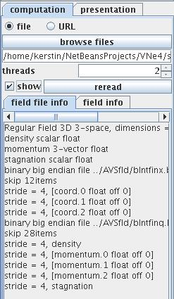
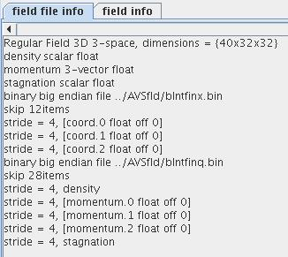
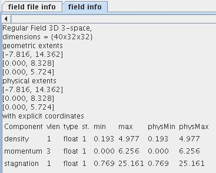
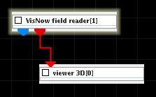
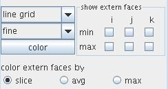
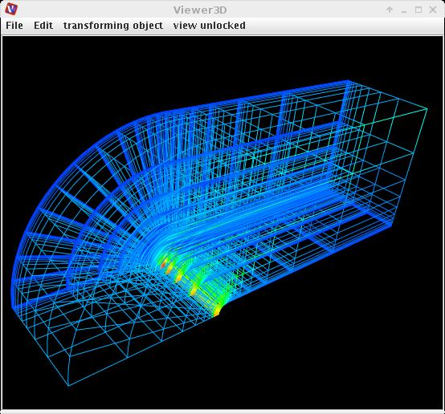

|
|
|
Reads VisNow Field (VNF) data files.
| input port | type | description | data acceptors |
|---|---|---|---|
| output port | type | description | data schemas |
| regularOutField | VNRegularField | Regular Field |
|
| irregularOutField | VNIrregularField | Irregular Field |
|
| outObj | VNGeometryObject |
VISNOW FIELD READER
This module reads VisNow Field files.
Output data
The output field is regular. There is a geometry object of the field.
Computation parameters

A radio button panel defines the source of the input data either from file or from URL.
To select an input file click the browse files button and select a file in the file browser or type the file name into the text input field below the button.
If show check box is on the geometry object is shown in the viewer. To prevent the viewer from showing it switch the box off before data is read.
To reread the same input file select the reread button.
In case of expert GUI the user can choose the number of threads to be used.
After reading in data from the input file there appears some basic information about the data:


Presentation parameters
Presentation tab contents are described in the common interfaces section unter the Presentation Panel entry.
Example

Choose the VisNow field reader module from the regular data readers library and move it into the work space. Read in bluntfin.vnf.

In the presentation tab of the module GUI choose fine and line grid.
